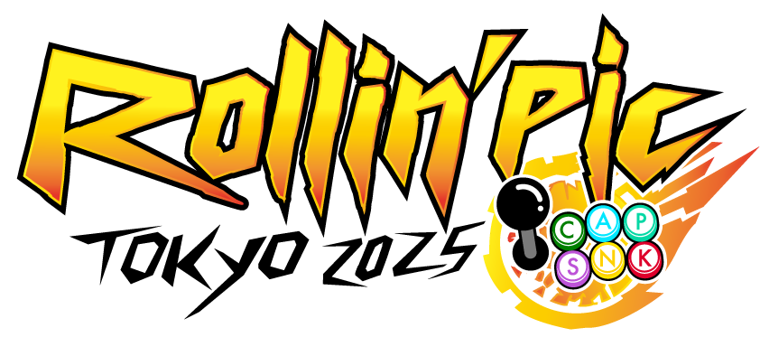
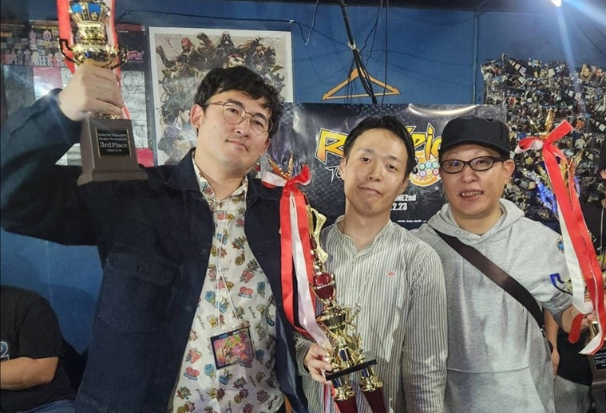
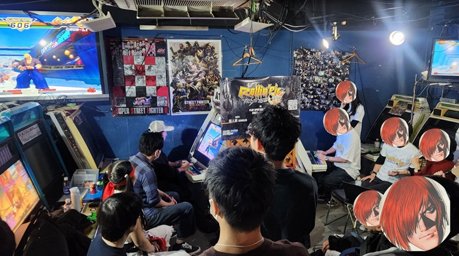
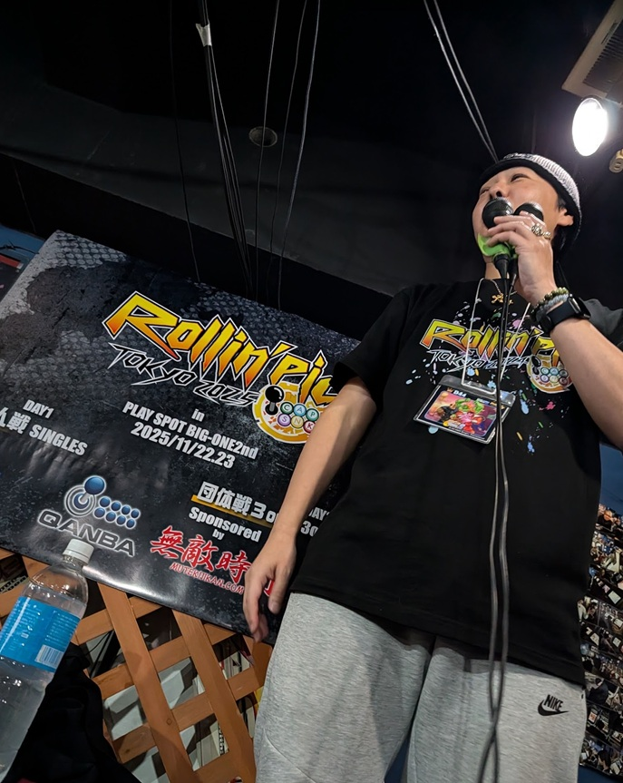
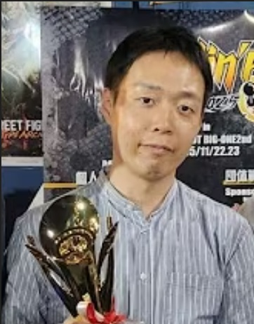
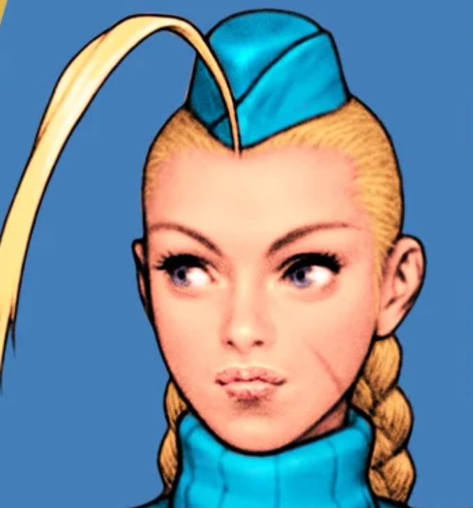
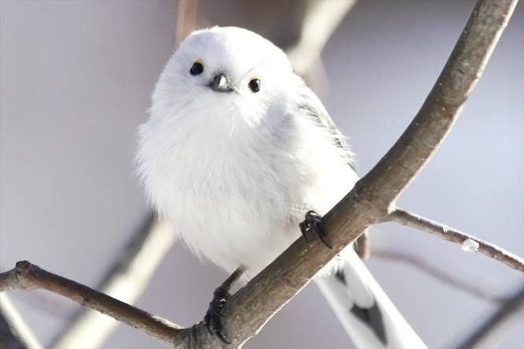
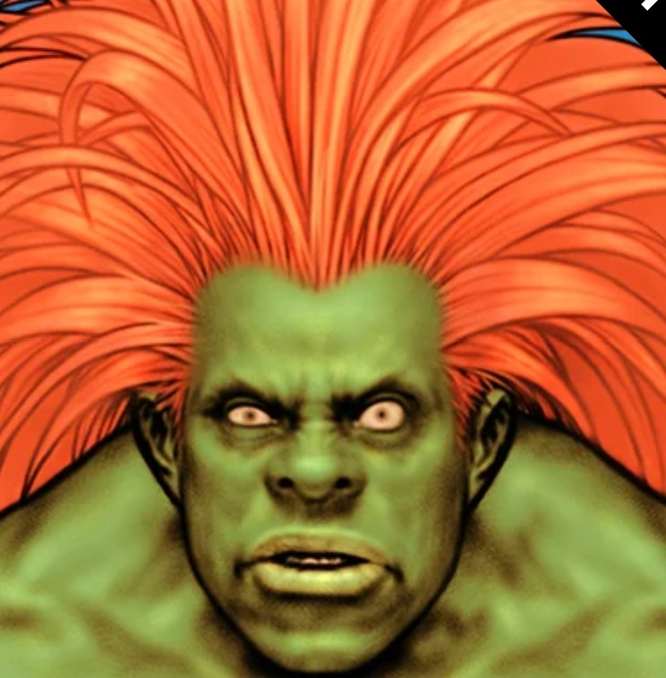
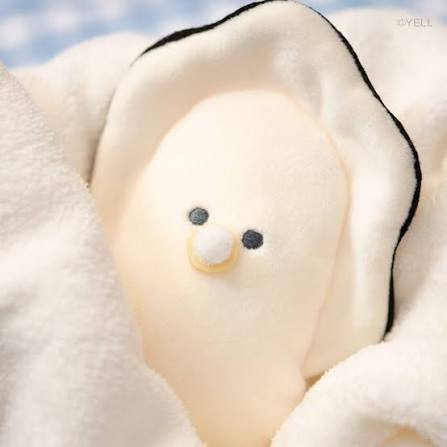

Rollin'picとは？



「Rollin'pic（ローリンピック）」は、カプコンとSNKの人気キャラクターが夢の共演を果たした伝説的な対戦格闘ゲーム『CAPCOM VS. SNK 2 MILLIONAIRE FIGHTING 2001』（通称：カプエス2）の国内最大規模を誇るユーザージェット・全国大会です。
プレイヤーとしても知られる D44 Bas氏 が中心となって主催しており、長年愛され続けるカプエス2コミュニティの熱量を象徴する一大イベントとなっています。
- 発売から長期間が経過した現在でも根強い人気を誇るカプエス2において、全国各地からトッププレイヤーや熟練のファンが集結するフラグシップ大会です。
- 例年、数日間にわたる日程で開催され、個人でのガチンコトーナメント（個人戦）に加え、仲間との連携が試される3on3のチーム戦なども実施されます。
- 本戦の出場権を賭けて、事前の全国各地のゲームセンター等で予選が繰り広げられるほか、直前の当日予選枠も設けられるなど、全国の猛者に門戸が開かれています。
- 近年は埼玉県の「南浦和プレイスポットビッグワン（ビッグワン2nd）」などを主な会場として開催されることが多く、長年培われた独自のグルーヴ選択やキャラクター性能の駆け引き、数々の名勝負・ドラマが生まれています。
注目の出場選手紹介

さっちゃんさん
名古屋のKグル使い。特にJD精度・確定反撃・差し返し・対空のレベルが高く。毎日Youtube配信を続けており、ファイコレのカプエス2大会では2度の優勝を誇る猛者。今回のローリンピックでも非常に注目の選手だ!




しまえなが
ユーラシア大陸に広く分布するエナガは20前後の亜種に区分され、日本では4亜種が生息するとされる。北海道に分布する亜種、シマエナガだけは顔が真っ白に見えるが、声や習性は他の亜種と変わらない。



かきのあかちゃん
大人気「つぶらな瞳の和食屋」から飛び出した、生がきの赤ちゃん "ベビーなまがき" ちゃんです🦪🍼
むぎゅっとしたくなるもちもちの体と、なんとも言えない切なげな表情に癒やされる人が急増中。おうちでの癒やしタイムにはもちろん、一緒にお出かけして「ぬい撮り」したくなる、みんなに愛されるバブみ満点のキャラクターです。


初心者でも必見！Rollin'picの見どころ
- 2001年の稼働開始から長い年月が経っているにもかかわらず、国内・海外から集まるプレイヤーたちの熟練度が非常に高く、トップメタの駆け引きが極限まで洗練されています。
- キャラクター性能の強弱だけでなく、対戦相手の心理やプレイスタイルを読み合うハイレベルな読み合いが毎試合繰り広げられます。
- カプエス2最大の醍醐味である6種類の「グルーヴ（C、A、P、S、K、N）」の選択が、試合の展開を大きく左右します。
- 同じキャラクターであっても、どのグルーヴを選ぶかによって立ち回りやコンボが全く異なり、プレイヤーの個性やこだわりが色濃く反映されるため、組み合わせの妙を見ているだけでも引き込まれます。
- 会場には多くのプレイヤーやファンが集結し、好プレイが飛び出した際の歓声や、大熱戦のクライマックスで見せる一体感は、ゲームセンターを拠点としたコミュニティ大会ならではの熱量に満ちています。
- 長年カプエス2のシーンを支えてきたプレイヤーたちによる、ドラマチックな名勝負や因縁の対決が数多く生まれる舞台となっています。
1on1 使用グルーヴ・キャラクター分布
| グルーヴ選択 | 使用回数 | 割合 |
|---|---|---|
| A (Aグルーヴ) | 16回 | 32.0% |
| C (Cグルーヴ) | 14回 | 28.0% |
| K (Kグルーヴ) | 13回 | 26.0% |
| 未定 (TBD等) | 3回 | 6.0% |
| N (Nグルーヴ) | 2回 | 4.0% |
| P (Pグルーヴ) | 2回 | 4.0% |
| 合計 | 50回 | 100% |
| 順位 | キャラクター名 | 使用回数 |
|---|---|---|
| 1 | ブランカ | 19回 |
| 2 | サガット | 18回 |
| 3 | ベガ | 11回 |
| 4 | 庵 | 10回 |
| 5 | キャミィ | 9回 |
| 6 | 響 | 8回 |
| 7 | 春麗 | 7回 |
| 8 | さくら | 5回 |
| 9 | ガイル / ギース / チャン / バイソン / バルログ / マキ / モリガン / リュウ / 山崎 | 各 3回 |
| 17 | ジョー / バイス / ユリ / ロック / 舞 | 各 2回 |
| 22 | アテナ / イーグル / エドモンド本田 / キム / ケン / ダルシム / ナコルル / ユン / ルガール / ロレント / 京 / 恭介 | 各 1回 |